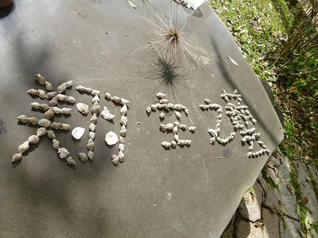
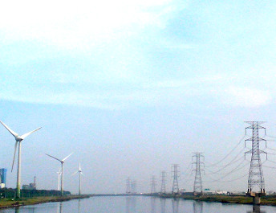
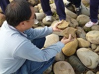
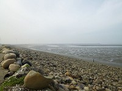
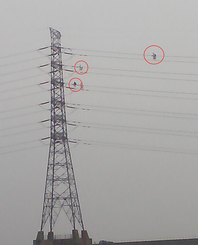
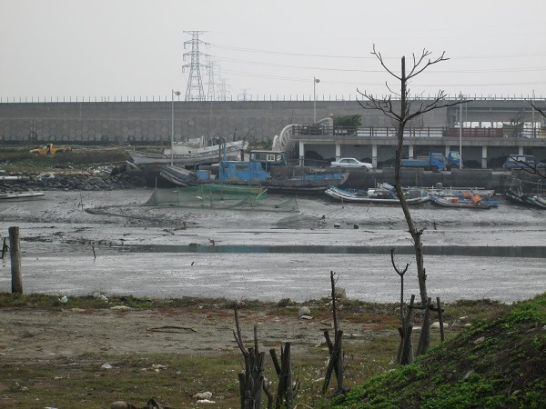
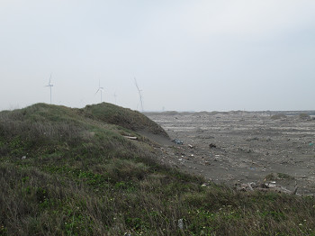
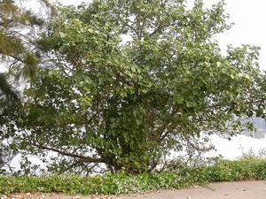
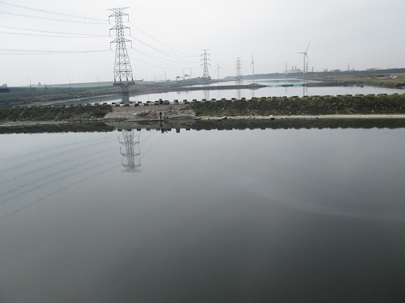
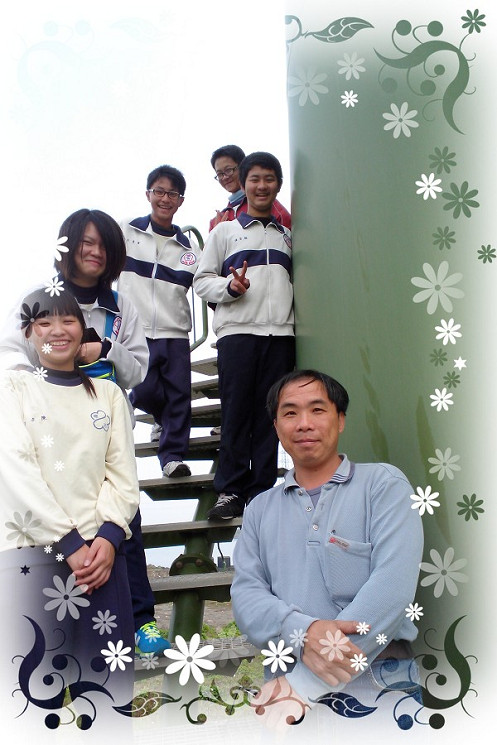

|
|
Explore
2013/02/04: Today is a beautiful day. Teacher Huang zealously takes us to the coast of Hsienhsi, where he is very conversant. Along the way, he points to many beautiful coastal sceneries and tells stories of the place. When listening, it feels as if we are watching a slideshow, playing historical scenes. The scenery along the way is so breathtaking! The place we have been living in has become so charming with the touching stories.

The picture shows that the members use the Wenzi coastal shells to arrange the team name, The Flying Art, for demonstrating the integration of local culture and our team.
The captain enjoys arranging the team name, but he adds an extra stroke to a word, which makes everyone laugh. |
|
Sea Catcher—the fishermen of Wenzi hang the green net to raise eel fry with seawater, and catch whitebait.
←The picture shows that Wenzi fishermen use the green net to catch whitebait while raising eels.
|
Lost Memory— the one-story lighthouse of cement was built by the military, which was lit with kerosene on a brazier as guidance to fishermen. There is a contrast between it and the modern tall lighthouse.
The picture shows Teacher Huang telling us local stories. The building used to be a lighthouse for guiding fishermen. → |
|
|
Future Oasis—the wind turbines at the common border of Hsienhsi and Wenzi are the tallest ones of Taiwan. Most of the wind turbines there are situated at the lee. When the wind speed is over 4 meters per second, the wind turbines start moving; when the wind blades turn horizontal, they can be stopped. The pylon is about 65 meters high, and the tower about 33 meters, so in total, it is around 10 stories high. The wind blades are made of fiberglass. The fold at the end is for adjusting its direction according to the wind direction, but not all wind turbines have the folds. There is also an anemoscope, wind meter, and more components. The wind blades are moved by the turbulent flow; it can rotate by itself with the level mechanism and without human operation. When it needs to brake, the acting force and reacting force will be generated. From 11:00 am to 12:00 pm, the wind gradually gets stronger; between 3:00 pm and 4:00 pm, when the wind reaches the maximum speed, it then drives the turbine blades to move.
←The wind in Wenzi coast is very big, so the wind turbines are set up to generate electricity utilizing the powerful sea wind.
|
Dongshang River of Central Taiwan—Qingan Canal—there are grouper, sea hare, fluorescent fish, and more organisms swimming in the canal; when fluorescent fish get disturbed, their bodies glimmer. Hsienhsi is located at the lowest point of Taiwan; the seawater crosses over the dike about twice a month. Because of the floods, lots of plants in the area die. The weir with a short parapet allows the tension of the water to shore up the dike, which is different from Jian Canal in Lukang.
The picture shows many living things swimming in the water of Qingan Canal.→
|

|
 |
Sandstone Effect—the sand of the river can be hardened into stone with pressure, temperature, and other effects. When the stone, which is very fragile, breaks, the pieces are very sharp. The people living in the Neolithic period used them for cutting meat. However, they become sand again after long periods of time due to the weathering effect. If it sounds crispy when hammering a stone, we can tell the stone must be very hard.
|
| ←The picture shows Teacher Huang demonstrating how the stone and sand transform. The sandstones are frailer than most stones. |
Beach—The coast at the border of Taizhong and Changhua is a terrain without an ocean trench, which is an ideal place for setting a beach. Compared to Rouzong Cape, it is a better place for a beach.
→The picture shows the shore where Teacher Huang says is the best spot in central Taiwan for setting up a beach.
|
 |
★海濱植物【註一】
|
|
|
|
Ⅰ.Conyza Genus - features in needle-leaf that prevent it from losing water, scrollable, and surviving well in coast area.
|
Ⅱ.Screw Pines - With spiny leaves
|
Ⅲ.Mangroves - We often say that the mangrove is an eco-environmental indicator, for it is a viviparous plant. For example, Kandelia - Teacher Huang says it tells the succession of the environment. |
Ⅳ.Others – include various pointed-leaf plants, or plants like the one in the picture. These plants are salt and alkali resistant with smooth surfaces. They keep large amounts of water, like the sea purslane.
|
 |
Unsung Heroes—We saw some heroes working on the high voltage towers of Hsienhsi coast on our way. Due to the high volume of salt and alkali of the coast, they have to risk their lives to clean the electric cable on high voltage towers. It is a tough job.
←Despite the cold weather, the heroes wash away the salt on the high voltage tower for us.
|
Charming Fishing Port – also named Houshui Port. Three bamboo poles on the water surface are meant to guide the direction of boats, which is different from Qingan Canal, where boats move in accordance with the waterway.
|
 |
↑The charming scenery of the Wenzi fishing pole. |
 |
“Lun” is mostly formed with soil and sand, having a very steep slope and likely to cause danger.
If “Lun” appears as a part of a place name, it means that most of the terrain is dunes beside a riverbank or seashore, such as Lunwei.
|
| ←The picture at left shows a “Lun” that is formed with soil, a place with a very steep slope. |
| Childhood Memory - there is a hibiscus forest on the opposite side of the shore, which is the most important part of Teacher Huang’s childhood. Whether it was food, clothing, housing, transportation, education, or music, the hibiscus forest was always involved. The sea never changed the forest since they have no contact with one another. However, for restoring purposes, many hibiscus trees have been planted in the shore recently, which worries Teacher Huang. [Note 1] |
 |
↑The picture above shows the prosperous and multi-functional hibiscus tree. |
 |
Powerful Gravel - Changbin Industrial Zone is offshore, separated by the 200-meter-wide Qingan Canal. The dike surrounding the industrial zone is made of the gravel dug in other places by dredgers. |
• Indian Cabbage White – They loom occasionally due to the impact of climate and monsoons before the season. A large number shows up between late April and July or August. The peak season is during the winter and spring.
• The “Number 17 Highway Plate” and the local residents use the local shells, originally for construction purposes, to make folk art crafts.
 |
↑A picture taken at the end of the coastal trip |
Reference: (Except the notes, the text and pictures on these pages were based on interview transcriptions, photographs and writing taken by the project team.)
Note1: http://sowhc.sow.org.tw/html/observation/sea/plant/202/s01.JPG

|